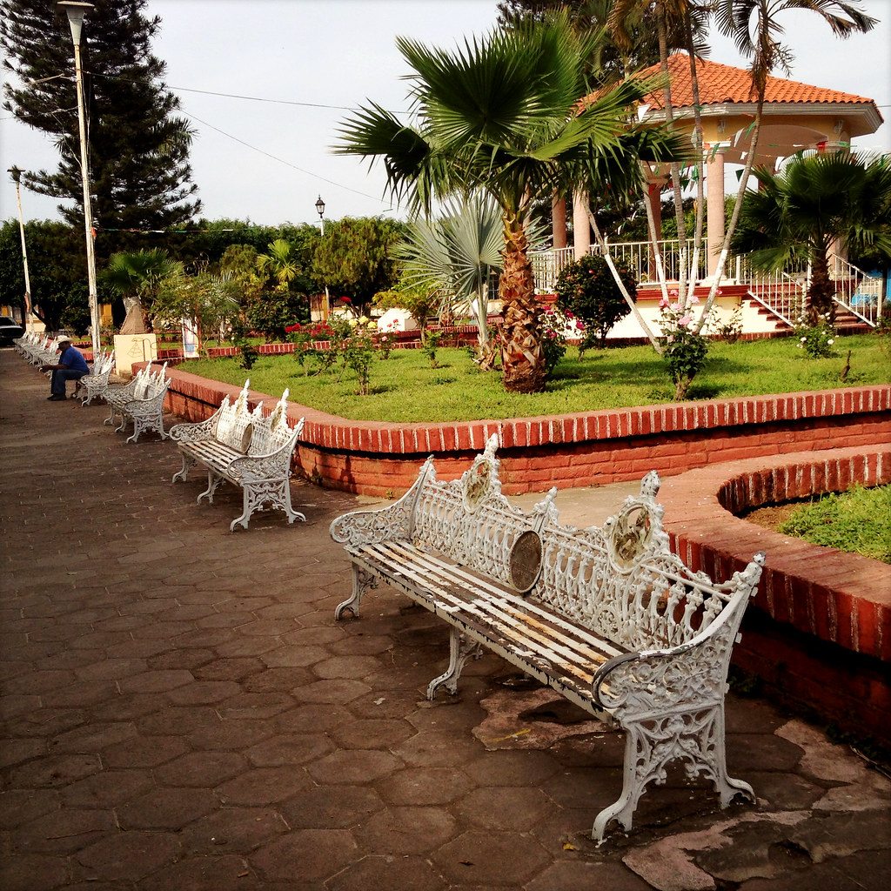
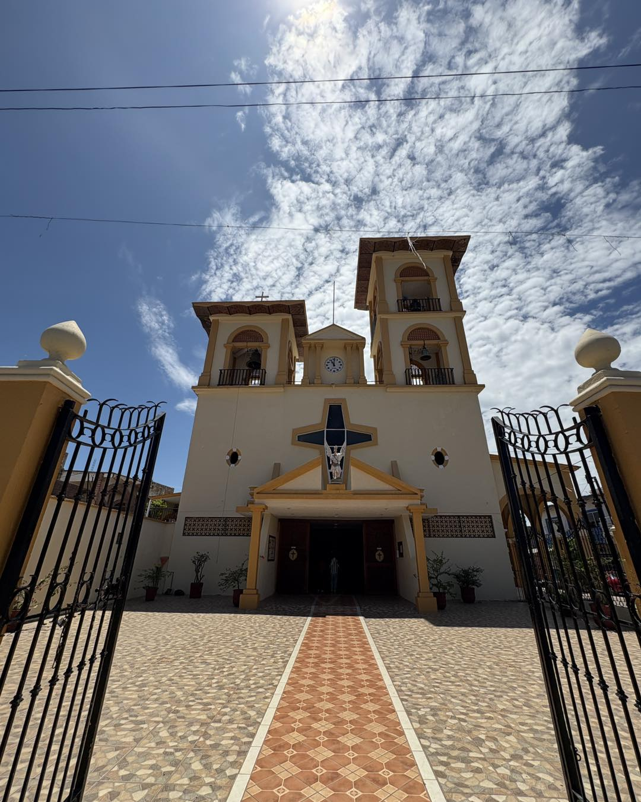
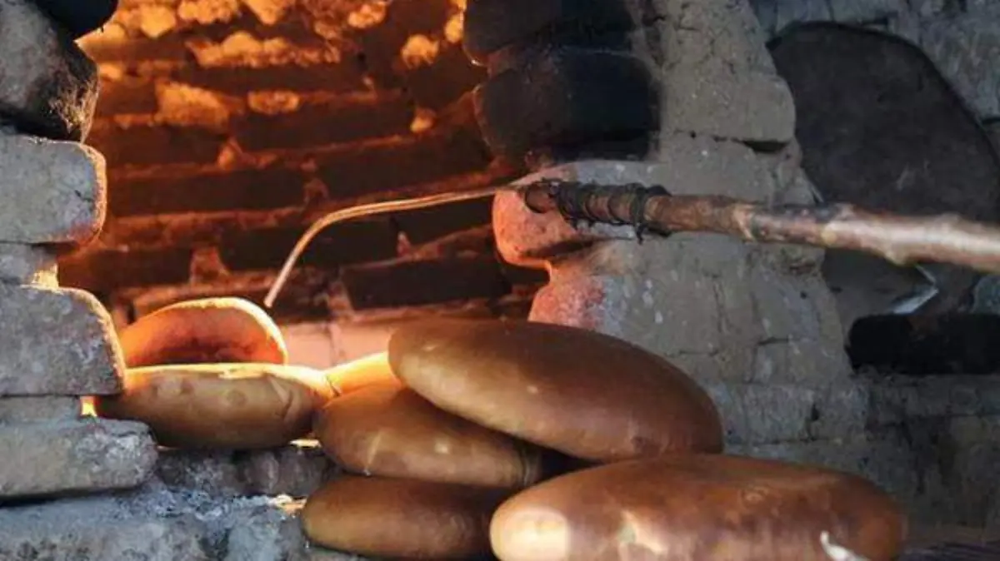
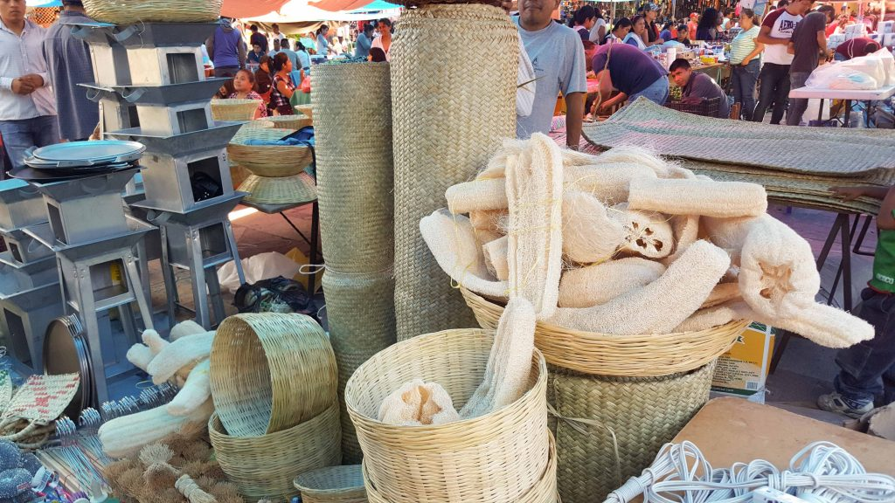
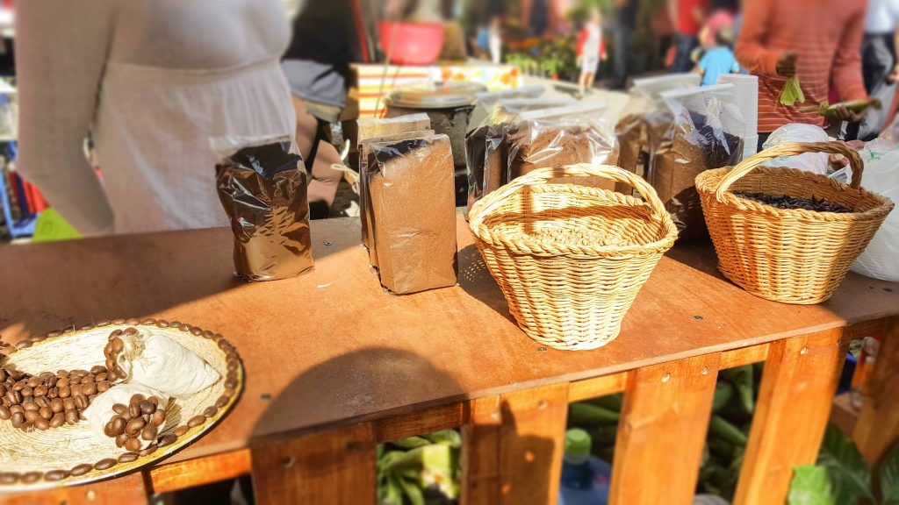
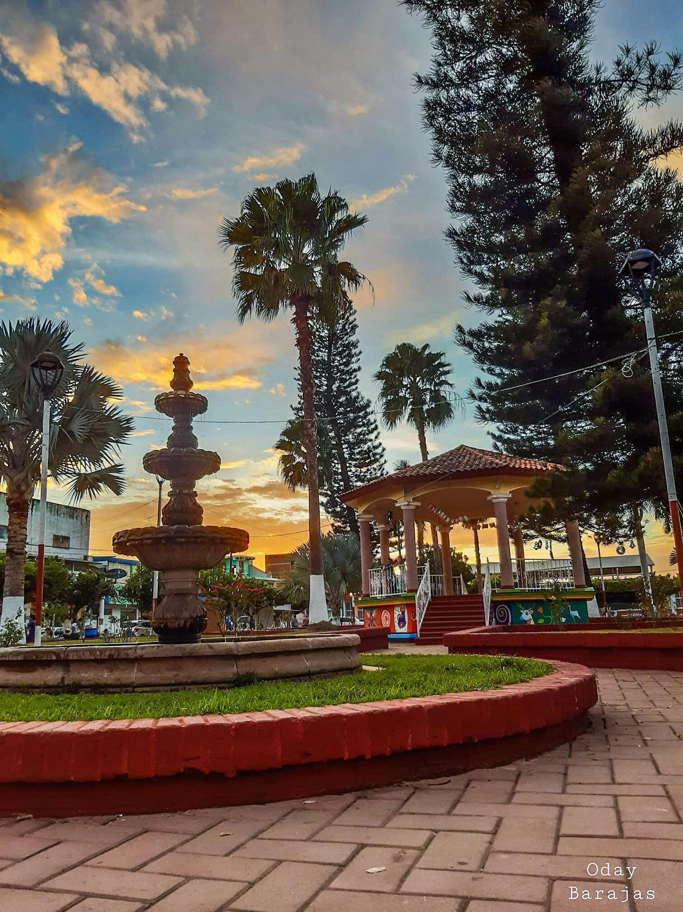

Historia, cafe de altura y tradición minera
Enclavado en las montañas de la Sierra de Vallejo, Zacualpan es un tesoro histórico de Nayarit. Fundado durante la época colonial, este pueblo conserva el encanto de sus años de bonanza minera, visible en sus calles empedradas y arquitectura tradicional.
Más allá de su historia, Zacualpan es famoso por producir uno de los mejores cafés orgánicos de la región. El clima fresco y la altura crean las condiciones perfectas para cafetales que aromatizan el aire de la montaña.





Descubre la esencia de la sierra
Visita las fincas cafetaleras locales, conoce el proceso artesanal desde la planta hasta la taza y degusta café de clase mundial.
Una joya arquitectónica del siglo XIX construida en piedra y ladrillo, símbolo de la fe y la historia del pueblo.
Alberga piezas arqueológicas encontradas en la zona y objetos que narran la vida de los antiguos mineros.
Recorre los caminos reales que conectaban las minas, rodeados de vegetación exuberante y aire puro.
No puedes irte sin probar el famoso pan de mujer y las gorditas de horno, cocinadas con recetas ancestrales.
Descubre las antiguas bocaminas y las leyendas que envuelven a este pueblo que alguna vez brilló por su plata.
Para disfrutar al máximo tu visita a Zacualpan, considera lo siguiente:

Sierra de Vallejo
Templado / Montaña
Pueblo Minero Colonial
Cultura y Naturaleza
Historia viva, aroma a café y la calidez de su gente te esperan.
Ver en Google Maps